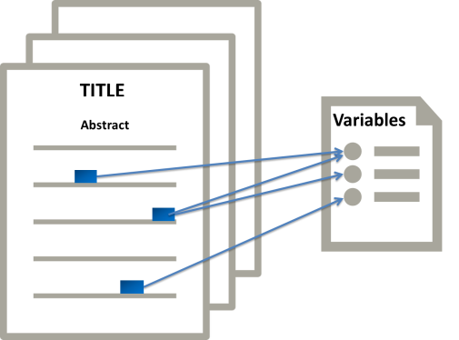

SV-Ident 2022:
Survey Variable Identification in Social Science Publications
Scholarly Document Processing 2022
Overview
TODO: not sure about this starting paragraph.
Social science literature often use and reference survey data.
While a survey dataset that is used in a scientific publication is typically referenced explicitly in-text using a bibliographic citation (e.g., Author et al.),
individual survey items or questions, also called survey variables, are often only referenced ambiguously.
For example, a survey variable may be referenced in many different ways. Below we only list four types of references (please see the annotation guideline v1 for more examples).
Example references:
Reference Type
In-text Reference
Variable
Self-containing reference
To test this, we analyzed data on the strength of individuals’ identification with their home town and its inhabitants from the German ALLBUS surveys.
Variable label: IDENTIFICATION WITH OWN COMMUNITY
Quotation of the variable text
There is only one item measuring happiness which directly asksthe respondents: ‘If you were to consider your life in general these days, howhappy or unhappy would you say you are, on the whole...
Variable question: If you were to consider your life in general these days, how happy or unhappywould you say you are, on the whole...
Paraphrase of the variable text
The second and the third questions come from the ISSP research, where respondents were asked about the influence of religious leaders on people’s votes and the government.
Variable question: How much do you agree or disagree with each of the following: Religious leaders should not try to influence how people vote in elections.
Negative polarity item
Victimization and fear of crime are dichotomous, with “1” indicating positive responses to either of the two following questions: “Have you been a victim of theft in the past 3 years?” and “Is there any place in the immediate vicinity in which you fear walking alone at night?
Variable question: Is there any area in the immediate vicinity - I mean within a kilometer or so - where you would prefer not to walk alone at night?
For this shared task, we focus on concepts specific to social science literature, namely survey variables. We build on the original work of [1],
[2] and propose an evaluation exercise on the task of Variable Detection and Linking. Survey variable mention
identification in texts can be seen as a multi-label classification problem: Given a sentence in a document (in
our case: a scientific publication in the social sciences), and a list of unique variables (from a reference
vocabulary of survey variables), the task is to classify which variables, if any, are mentioned in each
sentence.
This task splits into two sub-tasks:
Task 1 - Variable Detection: identifying whether the sentence contains a variable mention or not
Task 2 - Variable Disambiguation: identifying which variable from the vocabulary is specifically mentioned in a certain sentence
Examples
Motivation
Announcements
20.01.2022: Website is up.
Important Dates
| Event | Date |
|---|---|
| Training Set Release | TBA |
| Deadline for Registration | TBA |
| Test Set Release (Blind) | TBA |
| System Runs Due | TBA |
| Preliminary System Reports Due | TBA |
| Camera-Ready Contributions Due | TBA |
| Participant Presentations at SDP 2022 | TBA |
Data
See example inputs:
| doc_id | text | is_variable | variable |
|---|---|---|---|
| 4E1K1A-VQOXIJ | The juxtaposition of the respondents’ estimation of their own religiosity from 1 (not religious) to 10 (very religious) and the number of their children reveals a clear connection. | 1 | [580-Yes,1504-Yes,454-No,623-No] |
| 4E1K1A-VQOXIJ | The average number of children ranges from 1.44 for respondents who characterized themselves as non-religious to 1.9 for those who considered themselves very religious. | 0 | NoSkip |
| 4E1K1A-VQOXIJ | The rise is clear but not continuous. | 0 | No |
See example inputs:
| id | label | topic | question | answer |
|---|---|---|---|---|
| veastwest | REGION OF INTERVIEW: WEST - EAST | Identification variables | Does this interview take place on the territory of the old Federal Republic (incl. West Berlin) or on the territory of the former GDR (incl. East Berlin)? | Respondents from the old federal states / interview on the territory of the old Federal Republic (incl. West Berlin) ; Respondents from the new federal states / interview on the territory of the former GDR (incl. East Berlin) |
| v16 | SATISFACTION WITH PERFORMANCE OF FED.GOV | Political attitudes and participation | How satisfied are you - on the whole - with the current performance of the German government? | Not available;Very satisfied;Fairly satisfied;Somewhat satisfied;Somewhat dissatisfied;Fairly dissatisfied;Very dissatisfied;Don't know;No answer |
| v18 | SATISFACTION WITH DEMOCRACY IN THE FRG | Political attitudes and participation | Let's turn to democracy in Germany : Generally speaking how satisfied are you with democracy as practiced in Germany ? | Not available;Very satisfied;Fairly satisfied;Somewhat satisfied;Somewhat dissatisfied;Fairly dissatisfied;Very dissatisfied;Don't know;No answer |
For the full development data please visit the SV-Ident GitHub repository.
Evaluation
Task 1: The variable detection task is evaluted using a standard F1-macro score. You can use the script evaluate_task2.py to check the performance of your model.
Task 2: The variable disambiguation task will be evaluted using metrics commonly used in information retrieval and eXtreme Multi-label text Classification (XMC). These include: Precision@k, Recall@k, R-precision, and MAP. We use (OpenNIR, ir_measures, trectools) to compute all metrics.
You can use the script evaluate_task1.py to check the performance of your model on a diverse set of metrics.Submission
Rules:
- Provide a self-contained IPython notebook (can be hosted on Colab, Binder, Kaggle, or any other platform) which can be executed to reproduce the submitted results.
- Submit the submission file(s) (described below)
- You are allowed to use external data, but must the trained model available or provide a script and the data to train the model.
The submissions should have the following format:
Task 1
Expand details
Schema:
{
'DOC_ID': 'LABEL',
}
Example:
{
'17': '1',
'238': '0',
...
}
Task 2
Expand details
Schema:
{
'DOC_ID': {
'VAR_ID': 'SCORE',
},
}
Example:
{
'17': {
'v25': 0.0908927470445633,
'v637': 0.10519161820411682,
'v206': 0.08874139934778214,
...
},
'238': {
'v637': 0.0477452278137207,
'v418': 0.08932048827409744,
'v419': 0.05219722166657448,
...
},
...
}
where the first key is the document ID, the second key the variable ID, and the value the similarity score (lower is more similar) for the variable to the document.
Organizers
Expand details
Schema:
{
'DOC_ID': 'LABEL',
}
Example:
{
'17': '1',
'238': '0',
...
}
Task 2
Expand details
Schema:
{
'DOC_ID': {
'VAR_ID': 'SCORE',
},
}
Example:
{
'17': {
'v25': 0.0908927470445633,
'v637': 0.10519161820411682,
'v206': 0.08874139934778214,
...
},
'238': {
'v637': 0.0477452278137207,
'v418': 0.08932048827409744,
'v419': 0.05219722166657448,
...
},
...
}
where the first key is the document ID, the second key the variable ID, and the value the similarity score (lower is more similar) for the variable to the document.
Organizers
Expand details
Schema:
{
'DOC_ID': {
'VAR_ID': 'SCORE',
},
}
Example:
{
'17': {
'v25': 0.0908927470445633,
'v637': 0.10519161820411682,
'v206': 0.08874139934778214,
...
},
'238': {
'v637': 0.0477452278137207,
'v418': 0.08932048827409744,
'v419': 0.05219722166657448,
...
},
...
}
where the first key is the document ID, the second key the variable ID, and the value the similarity score (lower is more similar) for the variable to the document.
This task is organized by the VAriable Detection, Interlinking and Summarization (VADIS) project.